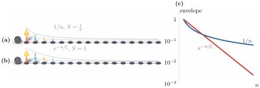
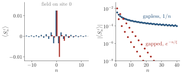

Page 12 of 15 of this session
9.9 Impurities as diagnostics IV, screening in quantum magnets
How do the spins of a quantum magnet screen one local magnetic perturbation, and does the decay of this screening tell whether the magnet has a gap? We will now see that it does. We arrive at (9.11), a power law \((-1)^n/n\) for the gapless \(S=1/2\) chain and an exponential \((-1)^ne^{-n/\xi}\) for the gapped \(S=1\) chain. The rule is that a power law means gapless and an exponential means gapped.
\[\mathcal H_\text{MF} = \sum_{ij,s} \chi_{ij}\, f^\dagger_{i,s} f_{j,s}. \tag{8.15}\]
\[\delta n(x) \;\xrightarrow{|x|\to\infty}\; A(v_0)\, \frac{\cos\!\big(2k_F |x| + \varphi_0\big)}{|x|^{\,d}} \qquad (d = 1,2,3). \tag{9.9}\]
The first is the mean-field Hamiltonian of the spinons of Section 8.9, a tight-binding model for the auxiliary fermions \(f_{i,s}\) with the hoppings \(\chi_{ij}\), at half filling since there is one fermion per site. The second is the Friedel oscillation of Section 9.6a, the change of density at a distance \(x\) from one impurity in a metal with the Fermi wavevector \(k_F\), in \(d\) dimensions.
The last case study brings us directly back to the parton construction of Session 8. We take a frustrated Heisenberg model, of the form (6.5), with a ground state similar to the quantum spin liquid of Section 8.4. This ground state has zero net magnetization on every site, and it does not break time-reversal symmetry. We add one local magnetic perturbation, and we ask how the spins around it screen it.
For \(S=1/2\) we do not need to repeat the construction from the beginning, since Session 8 already built the tool that we need. We write each spin with a pair of auxiliary (Abrikosov) fermions, \(S_i = \tfrac{1}{2}\sum_{\alpha\beta} f_{i\alpha}^\dagger \boldsymbol{\sigma}_{\alpha\beta} f_{i\beta}\), with the single-occupancy constraint \(\sum_\sigma f_{i\sigma}^\dagger f_{i\sigma} = 1\) at every site, and we make a mean-field decoupling of the quartic Hamiltonian that we obtain. As we derived in Section 8.9, this turns the Heisenberg model with a local magnetic perturbation into a bilinear Hamiltonian for the spinons, similar to a tight-binding one. The impurity gives an effective onsite term at its site, which mixes with the spinon band. We will not derive this mapping again here, and Section 8.8 gives the full mean-field decoupling with Abrikosov fermions.
What matters for us in this session is what this mapping gives us. It turns the screening of a magnetic moment inside a quantum spin liquid into the same mathematical problem as the impurity in a one-dimensional electron gas of Section 9.6. The only change is that the electrons are replaced by spinons. The induced spin correlation \(\langle S_0 \cdot S_n\rangle\), as a function of the distance \(n\) from the impurity, therefore has the same structure as (9.9). It has an oscillation set by the antiferromagnetic exchange, and it decays with distance in a way that depends on whether the spinon band is gapped or gapless.
Here the comparison between the \(S=1/2\) and \(S=1\) Heisenberg chains becomes clear. Both have a ground state similar to a spin liquid, with zero onsite magnetization when there is no impurity, and both develop an oscillating induced moment once the impurity is switched on. However, the decay is qualitatively different in the two cases.
For the two Heisenberg chains the decay is
\[\langle S_0 \cdot S_n \rangle \;\sim\; \begin{cases} \dfrac{(-1)^n}{n} & S = 1/2 \quad \text{(power-law, gapless)}, \\[6pt] (-1)^n\, e^{-n/\xi} & S = 1 \quad \text{(exponential, gapped)}. \end{cases} \tag{9.11}\]
A power-law decay of an impurity response signals a gapless ground state, and an exponential decay signals a gapped one, where the decay length in the exponent is the correlation length.
The reason is the same reasoning as for (9.9). Through the Abrikosov-fermion construction, the spin-\(1/2\) Heisenberg chain maps onto a gapless tight-binding chain of spinons, with a real Fermi surface of two points, as for the 1D metal of Section 9.4. So the impurity response must decay algebraically, in the same way as the Friedel oscillations of a metal. The spin-1 chain, on the other hand, has an excitation gap. This is the Haldane gap, which opens for antiferromagnetic chains with integer spin. This gap sets a finite correlation length \(\xi\), and it forces the impurity response to decay exponentially, in the same way as charge screening inside a band insulator.
The steps From a field on one spin to the impurity of a spinon chain
We take the simplest case, a field \(h\) on site \(0\) of the spinon chain (8.15), with the same hopping \(\chi\) on every bond and for both species. The field couples to
\[S^z_0=\tfrac12\big(f^\dagger_{0\uparrow}f_{0\uparrow}-f^\dagger_{0\downarrow}f_{0\downarrow}\big),\]
so the term \(-hS^z_0\) is an onsite energy \(-h/2\) for the up spinons and \(+h/2\) for the down spinons, on site \(0\) only.
The two species do not mix, since (8.15) has the same \(\chi\) for both and no term that flips the spin. Each species is then a tight-binding chain with one impurity of strength \(v_0=\mp h/2\), which is the problem of Section 9.6a. At first order in \(v_0\) its change of density at a distance \(n\) is the Friedel oscillation (9.9) with \(d=1\),
\[\delta n_\sigma(n)\;\propto\;v_{0\sigma}\,\frac{\cos(2k_Fn+\varphi_0)}{n}.\]
There is one spinon per site, so each species is at half filling. For the band \(2\chi\cos k\) this gives \(k_F=\pi/2\) and \(2k_F=\pi\), so \(\cos(\pi n+\varphi_0)=(-1)^n\cos\varphi_0\).
The moment is \(\langle S^z_n\rangle=\frac12(\delta n_\uparrow-\delta n_\downarrow)\). The two impurity strengths are opposite, and \(\delta n\) is linear in \(v_0\), so \(\delta n_\downarrow=-\delta n_\uparrow\) and
\[\langle S^z_n\rangle=\delta n_\uparrow(n)\;\propto\;h\,\frac{(-1)^n}{n},\]
meaning that the induced moment changes sign from site to site and its envelope falls as \(1/n\). The sign of \(\chi\) does not enter. The chain is bipartite, so \(f_{n\sigma}\to(-1)^nf_{n\sigma}\) changes \(\chi\) into \(-\chi\) and leaves every density as it is. For a dimerized \(\chi\) the spinon band has a gap and no Fermi surface, and the change of density decays exponentially, as in the insulating chain of Section 9.6b. Schematic 9.14 shows the two cases, computed.
This gives us a general diagnostic, which connects all the case studies of this session. A power-law decay of an impurity response signals a gapless ground state, and an exponential decay signals a gapped one, where the decay length in the exponent is the correlation length. The metal of Section 9.6 has a power law, and the insulating chain of Section 9.6b has an exponential. These two and the two quantum-magnet cases here are all examples of the same statement, and Figure 9.5 draws them side by side.


g5_spinon_chain_field.py
In a real spin-1 chain the defect can be the end of the chain. This article studies Y\(_2\)BaNi\(_{1-x}\)Mg\(_x\)O\(_5\), which has antiferromagnetic spin-1 chains of finite length, with inelastic neutron scattering. In a field there is a Zeeman resonance below the Haldane gap, and the dependence of its intensity on the wave vector gives a staggered magnetization at the chain ends. This magnetization decays exponentially towards the bulk, with \(\xi=8(1)\) at \(T=0.1\) K. The abstract gives \(\xi\) with no unit, and we read it as a number of sites along the chain. So an exponential decay is what a gapped chain shows around a defect, as the diagnostic of this page says.
The response of a spin chain to one impurity is measured at a distance \(n\). It decays as
\[(-1)^n\,e^{-n/\xi},\qquad \xi\approx2.5\ \text{sites}.\]
What do we conclude about the spin excitations?
Show the answers
- A. ✗ False
This is false. The \(S=1/2\) chain has an envelope \(1/n\). From \(n=10\) to \(n=20\) it falls by a factor \(2\), but \(e^{-n/2.5}\) falls by \(e^{-4}\approx0.02\).
- B. ✓ True
This is true. An envelope \(e^{-n/\xi}\) needs a finite \(\xi\), so the spectrum has a gap. Here \(\xi\approx2.5\), so between \(n=10\) and \(n=20\) the amplitude falls by a factor \(0.02\).
- C. ✗ False
This is false. The alternating sign appears in both cases, but the envelope decides. A \(1/n\) envelope falls by \(2\) from \(n=10\) to \(20\), while \(e^{-n/2.5}\) falls by \(0.02\), and we can tell them apart.
A field on site \(0\) of a gapped spinon chain induces a moment \(\langle S^z_n\rangle\). Each plot shows \(|\langle S^z_n\rangle|\) for one chain, on a logarithmic axis. Which chain has the smallest gap?
Show the answers
- A. ✗ False
This is false. This is the steepest line, so it has the shortest \(\xi\) and the largest gap. Here \(\chi\) alternates between \(1\) and \(0.6\), the gap is \(0.8\chi\), and the moment falls below \(10^{-8}\) before \(n=30\).
- B. ✓ True
This is true. A gapped chain gives \(e^{-n/\xi}\), which falls on a logarithmic axis with a slope set by \(1/\xi\). The shallowest line has the longest \(\xi\), and a smaller gap gives a longer \(\xi\). Here \(\chi\) alternates between \(1\) and \(0.9\), and the gap is \(0.2\chi\). On the even sites the moment falls only from \(1.1\cdot10^{-4}\) at \(n=10\) to \(7.8\cdot10^{-7}\) at \(n=40\).
- C. ✗ False
This is false. This line is steeper than the shallowest one, so its gap is larger. Here \(\chi\) alternates between \(1\) and \(0.8\), and the gap is \(0.4\chi\), twice the smallest gap of the three. On the even sites the moment falls from \(2.9\cdot10^{-5}\) at \(n=10\) to \(1.6\cdot10^{-8}\) at \(n=36\).
On a logarithmic axis an exponential tends to a straight line far from the impurity, while a power law keeps bending, so this plot is the way to read a decay law from a measurement.
The staggered moment around a defect in a gapped chain decays as \((-1)^ne^{-n/\xi}\), with \(\xi=8\) sites. By which factor does its size fall from \(n=8\) to \(n=24\)? Compare with a power law \(1/n\) over the same distances.
Solution
For the exponential the ratio of the two sizes is
\[\frac{e^{-24/8}}{e^{-8/8}}=e^{-2}\approx0.14.\]
For the power law it is \(8/24=1/3\approx0.33\). The two ratios differ by a factor of about \(2.5\), but in a measurement \(\xi\) and the power are not known. Two points fix the amplitude and the decay constant of either law, so two points alone cannot tell the two laws apart. A measurement needs a range of several \(\xi\), and a logarithmic axis, where the exponential of this problem is a straight line of slope \(-1/\xi\) and the power law keeps bending.
Try it. Run the cell, which compares the gaps \(0.2\) and \(0.6\), since gaps = [0.1,0.3] are the onsite energies \(\pm m\) and the gap is \(2m\). The change of the LDOS decays as \(e^{-x/\xi}\), with \(\xi\approx10\) sites for the smaller gap and \(\xi\approx3.3\) sites for the larger one. The decay length is set by the gap, in the same way as \(\xi\) in (9.11).
The screening in quantum magnets has no direct counterpart in session9.ipynb, since none of its sections build a chain of spinons or Abrikosov fermions. So there is no exercise that reproduces (9.11) itself.
Notebook check-in: session9.ipynb, “The impact of a strong impurity” (Core)
This is not a spin model. The cell puts one impurity of growing strength into three gapped chains built on geometry.bichain(), which has two sites in its cell and equal hoppings. These are an s-wave superconductor, an insulator with a sublattice imbalance and a topological p-wave superconductor. The cell plots the density of states summed over four sites, the impurity site and the next three sites of the chain. Look at which of the three gaps get a state inside them as the impurity grows, which is the question of Section 9.8 for one strong impurity. The decay length of this page, which is shorter for the larger gap, is in the cell “Impurity in an electronic insulator” that the box above runs.